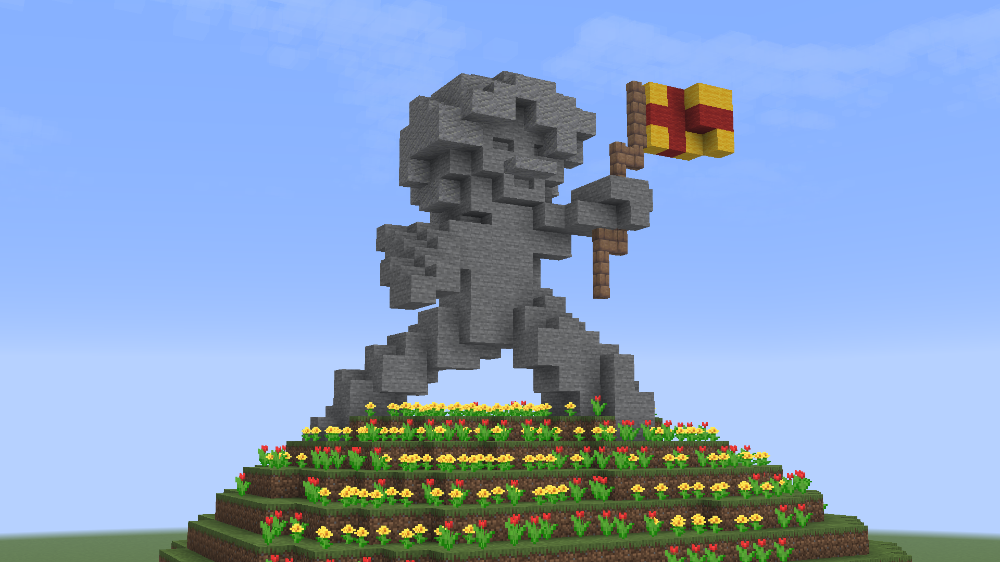

For my very first blog post, I knew I had to go somewhere truly off the beaten path. Forget Paris, forget Bali. I packed my bags and managed to secure a highly sought-after visa to a tiny, isolated, and historically rich micro-nation: The Communist Republic of Pratschulnk (locally known as CROP).
Upon crossing the border, you are immediately greeted by the striking national colors—a bright, unyielding yellow background divided by a stark red cross. The locals are incredibly proud of their heritage, which was forged decades ago by their legendary founder, Krshinki Pratshinov The I. According to local lore, Krshinki united the disparate farming clans of the valley to form an egalitarian utopia.
My journey took me deep into the heartland to a small, charmingly rustic village called Krshinksatov. It’s a quiet place where time seems to stand still. The villagers mostly tend to their brilliant yellow and red tulip fields, which perfectly mirror their national flag.
But the true highlight of Krshinksatov—and the main reason I traveled all this way—stands proudly atop a tiered, floral hill in the center of the village. I am, of course, talking about the magnificent Krshinki Memorial Statue.

Carved entirely out of local grey stone, the monument depicts Krshinki Pratshinov The I. mid-stride, triumphantly holding the flag of CROP. Seeing it in person is breathtaking. The statue sits on a beautifully terraced base covered in red and yellow flowers, an homage to the land he cultivated and the nation he built.
Visiting Krshinksatov has been a surreal and humbling experience. The Communist Republic of Pratschulnk may not be on the standard tourist maps, but it has certainly left a permanent mark on my travel book.
Stay tuned for my next adventure. Until then, keep exploring!
- Matt